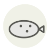

Carrelet
Plaice
| Nom latin | Pleuronectes platessa |
|---|---|
| Famille | Poissons & fruits de mer |
| Origine | Atlantique Nord & mer du Nord |
| Saison | avril – septembre |
| Goût | Délicat · Sucré · Doux · Iodé |
| Prix courant | 8–15 €/kg |
Ce que c’est
Il naît symétrique, nageant droit comme tout poisson, puis un œil migre à travers le crâne en quelques semaines jusqu’à ce que les deux soient du même côté. Les taches orange sont sans équivoque et pâlissent dans les heures qui suivent la mort.
En cuisine
Il est mince et cuit en trois ou quatre minutes. Farine, beurre, citron — plus élaboré l’enterre.
S’accorde avec
Beurre Citron Câpres Persil Farine T55 Crevette Poivre noir Crème
De saison en même temps
Merlu Saint-Pierre Bar Crabe des neiges Truite Vive
Une erreur ici, ou un oubli ? Dites-le nous